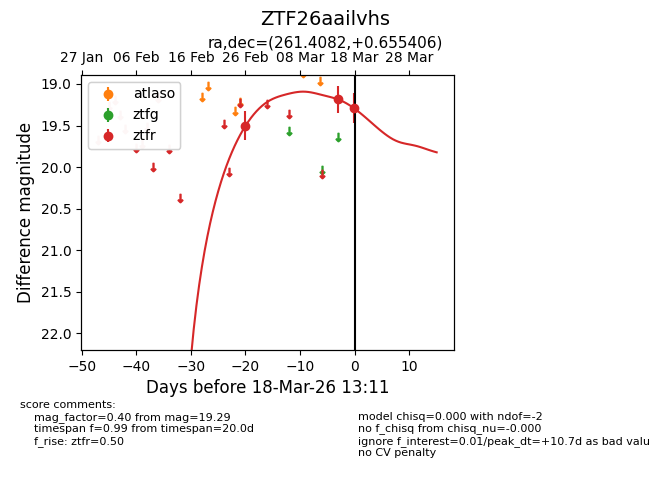
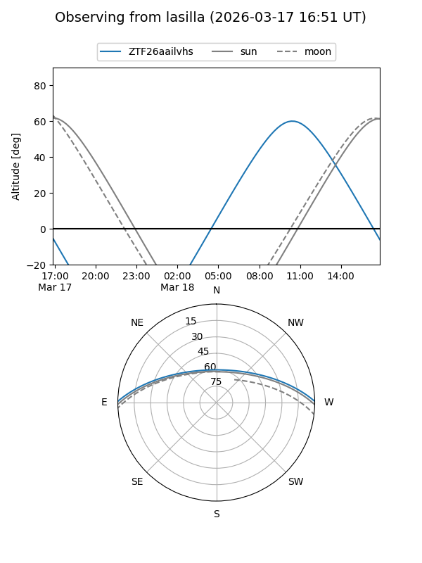
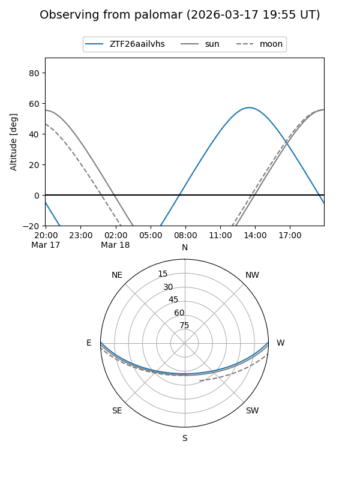

ZTF26aailvhs
Target ZTF26aailvhs at 2026-03-18 13:13
Aliases and brokers:
FINK: link
Lasair: link
ALeRCE: link
alt names
ZTF26aailvhs (ztf,fink_ztf)
Coordinates:
equatorial (ra, dec) = 261.4082,+0.65541
equatorial (HMS+DMS) = 17:25:37.97,+00:39:19.46
galactic (l, b) = (23.3825,+19.30957)
Flags:
Photometry:
last ztfr=19.29
3 ztfr detections
Lightcurve

Visibility


Additional plots